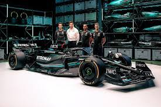

Öncelikle bu bölüme olan ilgimden bahsetmek istiyorum.Küçük yaştan beri bilgisayar oyunlarıyla büyümüş olmamız çoğumuz için bir etken ama bunu ileride meslek olarak yapabileceğimi 12.sınıfta sınava hazırlanırken karar verdim.Aslında doğruyu söylemek gerekirse matematik öğretmenliğini de çok istiyordum ama bilgisayar mühendisliğinin daha mantıklı ve daha gelecekli bir bölüm olarak gördüğüm için bu bölümü tercih ettim.
Çoğu erkek çocuğu gibi futbolcu olma hayaliyle büyüdüm ama bildiğiniz üzere birazcık bu sektörde bazılarınızın elinizden tutup ilerletmeleri gerekiyor bu yüzden bana nasip olmadı.Ama bu olay beni futbola asla küstürmedi çok koyu bir Beşiktaş taraftarıyım maçlara giderim.
Onun dışında lise yıllarımın sonunda başlayan Motor sporlarının zirvesi olan formula 1'in sıkı bir takipçisiyim.Bunu kendime hobi olarak görüyorum ve keşke formula 1'le daha erken tanışsaydım ve en büyük hayallerimden birisi de bir gün formula 1 takımlarından birisinin kadrosunda mühendis olarak yer alabilmek.Bu sporda beni içine çeken en büyük şeylerden birisi de sadece bir pistin etrafında 50-60 tur dönmüyor olmaları işlerin arkasındaki tasarım mühendislik ve strateji gerçekten çok başka. Kısa bir formula 1 editi bırakıyorum keyfini çıkartın..
Formula 1 Video

MERCEDES W14 E Performance
Dışardan bakılınca çok sade zevklerim varmış gibi gözükse de gerçekten sahip olduğum zevkleri en dibine kadar bilmek istediğim için şu anda ikisinden de sıkılmadım ama bunların yanında Türk Tarihini detaylamasına öğrenmek ve genel kültürümü genişletmek istiyorum.